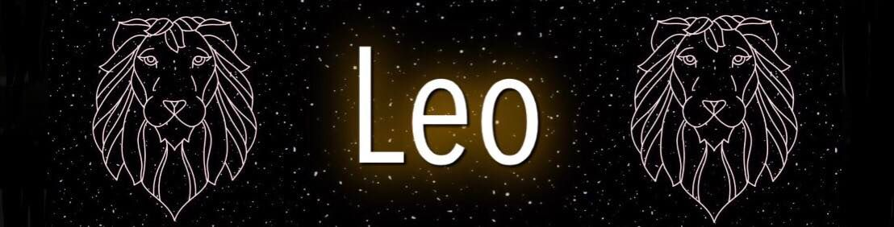
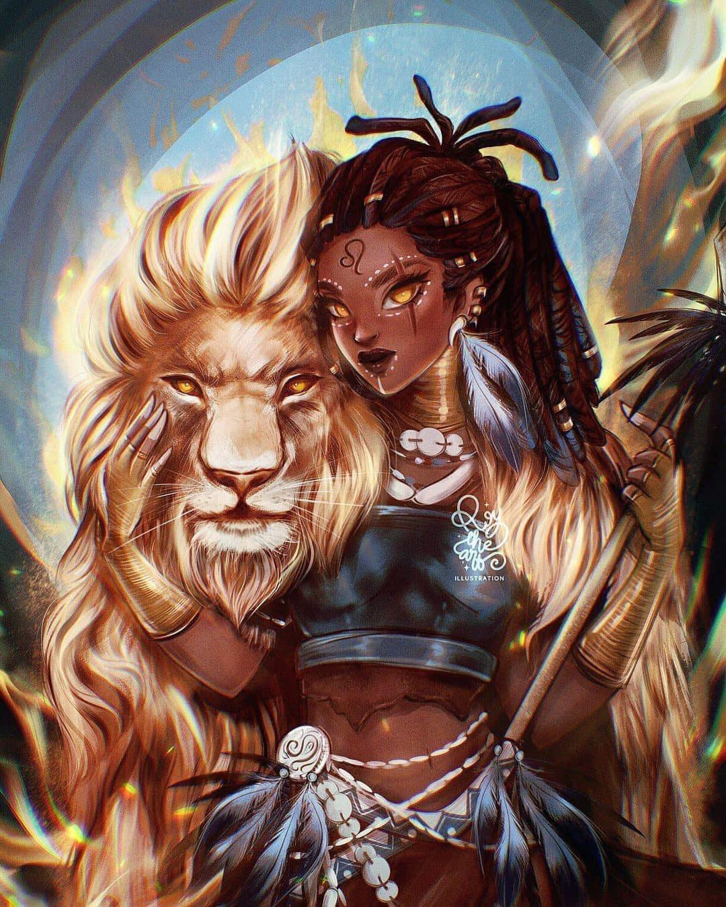

 |
|
People born under the sign of Leo are natural born leaders. They are dramatic, creative, self-confident, dominant and extremely difficult to resist, able to achieve anything they want to in any area of life they commit to. There is a specific strength to a Leo and their "king of the jungle" status. Leo often has many friends for they are generous and loyal. Self-confident and attractive, this is a Sun sign capable of uniting different groups of people and leading them as one towards a shared cause, and their healthy sense of humor makes collaboration with other people even easier.
Leo - the Lion in the Cave The story of the Lion always speaks of bravery. This is an animal fearless and impossible to challenge, hurt or destroy, their only weaknesses being fear and aggression towards those they confront. Living in a cave, a Lion always needs to have one, nesting and finding comfort in hard times. However, they should never stay there for long. With their head high, they have to face others with dignity and respect, never raising a voice, a hand, or a weapon, bravely walking through the forest they rule.